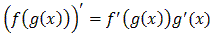
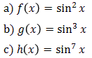
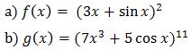
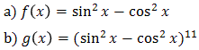
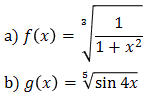

⠀
Jesteś tutaj:
Studia
→
Pochodne
→
Pochodne funkcji złożonych
◀ Pochodne funkcji trygonometrycznych
Szeregi liczbowe ▶
Pochodne funkcji złożonych
Wzór na obliczanie pochodnej złożenia funkcji: 
Oblicz pochodną funkcji

Oblicz pochodną funkcji

Oblicz pochodną funkcji

Oblicz pochodną funkcji

◀ Pochodne funkcji trygonometrycznych
Szeregi liczbowe ▶